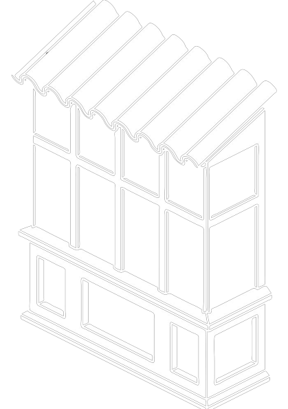
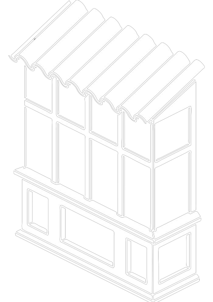

Компания «Алютех» предлагает клиентам современное решение для совмещения двух и более рольставен. При этом защитный короб является цельной конструкцией без стыков в местах соединения. Такие конструкции называются совмещенными роллетными системами.
Данные системы рекомендуются для установки при совмещении проемов «балкон-окно», выставочных павильонов торговых центров или при разделении витрин магазинов с целью установки более экономичного типа профиля и меньших коробов.
Своевременное и квалифицированное техническое обслуживание, позволяет сохранить работоспособность роллетных систем на длительный период времени. Важно: стоимость планового сервисного обслуживания гораздо ниже, чем стоимость срочного ремонта в случае выхода из строя роллетной системы и блокирования доступа в помещение, что особенно актуально для торговых объектов, - простой торгового объекта ведет к увеличению расходов и упущенной выгоде.
Регламент технического обслуживания описан в руководстве по эксплуатации роллетных систем с ручным и автоматическим управлением.
Согласно руководства по эксплуатации роллетных систем с ручным и автоматическим управлением, техническое обслуживание необходимо проводить не реже одного раза в год. Техническое обслуживание роллетных систем, эксплуатирующихся в особых условиях (длительные высокие или низкие температуры, повышенная запыленность и т.п.), рекомендуется проводить не реже одного раза в полугодие.
В ассортименте ГК «АЛЮТЕХ» представлены выключатели, к которым напрямую можно подключить два электропривода без дополнительного использования группового устройства.
С помощью выключателей DUP/2 (для внутренней проводки) или DAP/2 (для наружной проводки) можно одновременно управлять двумя электроприводами рольставней.
С помощью выключателя Inis Duo (для внутренней проводки) от Somfy можно осуществлять как одновременное, так и независимое управление двумя электроприводами рольставней.
100%-ной защиты от взлома не существует. Вопрос лишь в количестве времени, которое понадобится злоумышленникам, чтобы проникнуть в помещение, и уровне шума, который будет при этом производиться. Существующая система сертификации определяет семь классов устойчивости ко взлому Р1—Р7 , соответственно время, необходимое на взлом, — от менее 10 и, до 50 минут.
Ролллетные системы «АЛЮТЕХ» представлены широким ассортиментом профилей, сертифицированных на класс устойчивости ко взлому Р1—Р5.
В зависимости от способа производства роллетные профили могут быть роликовой прокатки или экструдированными.
Профили для роллетных систем роликовой прокатки с пенозаполнением сертифицированы на класс устойчивости ко взлому Р1 согласно ГОСТ Р 52502-2012, ГОСТ Р 52503-2005, СТБ 51.2.03-2000, что соответствует минимальному классу устойчивости со временем взлома до 10 минут. Данные рольставни устанавливаются для защиты от солнца, шума и непогоды, обеспечивают прекрасную теплоизоляцию окон здания.
Рольставни из экструдированных профилей с повышенной защитой от взлома являются отличным решением для офисов, магазинов и банков.
Отличаются повышенной устойчивостью ко взлому благодаря большой толщине стенок (1—1,5 мм) и наличию поперечного ребра жесткости.
Рольставни из экструдированных профилей «АЛЮТЕХ» сертифицированы на классы устойчивости ко взлому Р3 и Р4 в соответствии с ГОСТ Р 52502-2012, ГОСТ Р 52503-2005, СТБ 51.2.03-2000.
Специальное предложение — противовзломные роллетные системы «АЛЮТЕХ», сертифицированные на класс устойчивости ко взлому Р5, время, необходимое на взлом, — до 20 минут.
Качество роллетных систем «Алютех» подтверждено международными сертификатами
С 1 сентября 2012 года в России введен новый ГОСТ Р 52502-2012 «Жалюзи-рольставни металлические. Технические условия». Этот документ включает все требования, предъявляемые к рольставням: в части теплотехники, ветровой нагрузки, вопросов безопасности, энергоэффективности, коррозийной стойкости комплектующих и т.д.
Последние семь лет нормативная база, регулирующая производство Рольставней на территории России, не учитывала всех технических параметров продукта, в то время как в странах ЕС уже не первый год существует специальный стандарт EN 13659:2004, который унифицирует производственные требования и требования безопасности именно для роллетных систем. Новый ГОСТ Р 52502-2012 максимально приближен к данному европейскому стандарту.
В соответствии с техническими требованиями данного документа рольставни должны:
обеспечивать дополнительное сопротивление теплопередаче окна или двери не менее чем на 20%;
обладать стойкостью к нагрузке при воздействии на центр полотна твердого тела массой 2 кг с энергией удара 20 Дж (данная нагрузка равнозначна удару плечом человека среднего телосложения);
обеспечивать коррозионную стойкость: металлические элементы, имеющие защитно-декоративное покрытие, должны выдерживать не менее 1000 часов в нейтральном соляном тумане;
обладать устойчивостью к воздействию ветровой нагрузки;
соответствовать одному из выделяемых стандартом классов защиты:
по взломоустойчивости;
пулестойкости.
Что это дает потребителю?
Введение нового ГОСТа значительно повышает защищенность российского потребителя, ведь наличие у производителя сертификата соответствия – гарантия качества продукта. К тому же покупатель имеет возможность самостоятельно ознакомиться со всеми требованиями к рольставням и выбирать только высококачественную продукцию, соответствующую этим требованиям.
ГК «АЛЮТЕХ» первой на территории России подтвердила полное соответствие рольставней требованиям нового ГОСТ Р 52502-2012. Об этом свидетельствуют протоколы испытаний и сертификаты соответствия, выданные Ржевским научно-исследовательским испытательным сертификационным центром.
Согласно ГОСТ Р 52502-2012 и ГОСТ Р 52503-2005, для определения класса взломоустойчивости (от Р1 до Р8) роллета обязательно должна пройти три вида испытаний:
статической нагрузкой
ударной нагрузкой
с использованием инструмента (для класса Р1 отсутствует)
Для каждого класса устойчивости к взлому определены свои значения нагрузок и набор ручного инструмента.
В случае, если роллета выдержала все три вида нагрузок для одного и того же класса, в сертификате указывается один класс без разделения по нагрузкам. Например, рольставни «Алютех» из профилей роликовой прокатки и экструдированных AER44/S, AER55m/S, AER55/SCR, AEG84 показали одинаковые результаты по трем видам воздействия, поэтому общий класс устойчивости к взлому прописан на главной странице каждого сертификата без расшифровки вида испытания.
А например, рольставни из профилей AER55/S и AEG56 также прошли три вида испытаний, но показали более высокий класс по статическим нагрузкам, поэтому на них выдали два сертификата:
– статическая нагрузка – класс P4
– ударная нагрузка, взлом инструментом – класс Р3
Некоторые другие производители проверяют класс взломоустойчивости только для экструдированных профилей. А между тем, рольставни из профилей роликовой прокатки также должны выдерживать минимальные нагрузки и защищать от ударов. Сможет ли устоять их изделие при минимальном ударе? Вопрос остается открытым.
В случае утери пульта дистанционного управления роллетных систем с приводами со встроенным радиоприемником ALUTECH серий AM0/R, AM1/R посторонние могут получить доступ в защищаемое помещение.
Чтобы этого избежать, необходимо в память привода записать в качестве мастер-пульта другой имеющийся в распоряжении пульт – AT-1, AT-15, AT-1S или AT-15S. При записи нового мастер-пульта в память привода предыдущий мастер-пульт, а также остальные записанные пульты автоматически удаляются из памяти привода.
* Мастер-пульт – первый пульт, записанный в память привода.